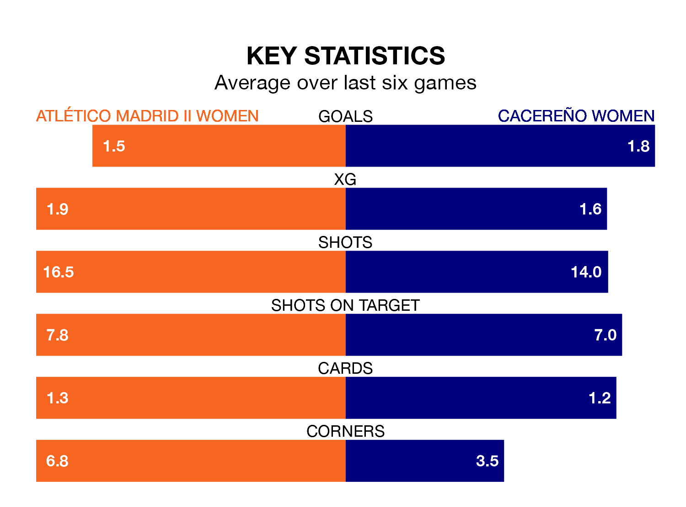

Struggling Cacereño Women face Atlético Madrid II Women away on Saturday looking to build on a win in their last league outing.
After securing all three points with a 1-0 victory over AEM Lleida Women on January 28, Cacereño sit 11th in Primera Federación Femenina.
They travel to play an Atlético Madrid II side ninth in the standings, who lost in their last match, 1-0 against Albacete Women, on January 27.
With 20 goals in 16 games so far this season, Atlético Madrid II are scoring at below the league average rate with 1.2 goals per game. But they are conceding fewer than average too, letting in 20 goals at a rate of 1.2 per game.
Cacereño are also below average scorers, with 1.2 goals per game, compared to a league average of 1.3. They have conceded 2.0 goals per game.
The hosts are in mixed form in Primera Federación Femenina, with two wins and two draws from their last six games.
With three wins and three losses over that period, the away team's form is slightly better – they have taken nine points from 18, compared to Atlético Madrid II's eight.
Updated: 14:12 (UTC), 02/02/24